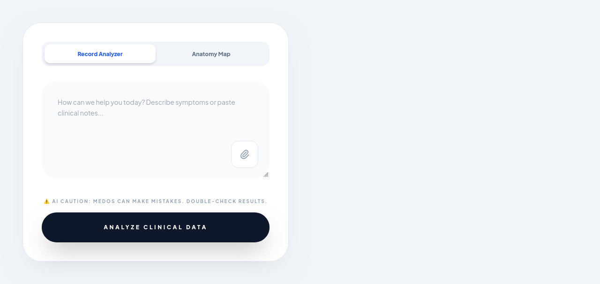

MedOS
A "Clinical Intelligence Suite" concept UI — patient profiles, a record analyzer, and an anatomy map. A software prototype exploring how AI concepts apply to a complicated real-world domain.

Older project exploring what it would take to structure clinical information — patient profiles, consultation records, anatomy mapping — in a way a non-clinical software system could reason about, without pretending the result is trustworthy for real medical use.
WHAT I BUILTA patient-profile system with a record analyzer, an anatomy map for selecting affected regions, and a consultation-record log — all wrapped in an interface that's explicit about its own limitations.
WHAT I LEARNEDApplying software/AI concepts to a domain like healthcare surfaces how much of "building the feature" is actually about being honest with the user about what the system can't responsibly claim to know.